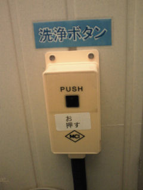

黒い四角の部分が
ボタン。
ボタンというより
自動洗浄方式の
感知機のように見える。
立体感がなくて
押しボタンには見えない。
設計した人も
わかりにくいと
気がついたらしく
なぜか英語でＰＵＳＨと
表示したらしい。
ＭＣＩという
意味不明の三文字略語。
社名か？
しかし、それでも
押してくれないので
現場の人が
日本人が使用する言語で
お
押す
と書き加えなければ
ならなかった。
指で押すと
ペコッという感触と
即座に水の流れる音の
リアクションがあって、
これが押しボタンだ
という事と
機能が正常に
作動した事を
認識させられる。